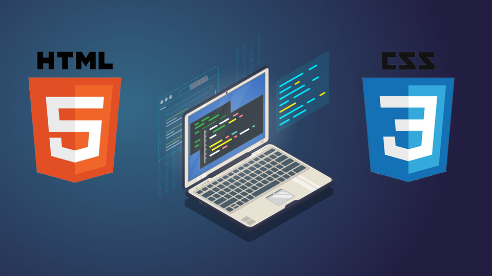

HTML&CSS

Html und css sind keine Programiersprachen sondern werden verwendet um Websitsen zu erstellen.
Mit html sagt man was angezetgt wird und mit css wie es angezeigt wird.
HTML
HTML oder auch Hypertext Markup Language ist eine textbasierte Auszeichnungssprache zur Struckturierung elektonischer Dokumente wie texte mit hyperlinks, bildern und anderen Inhalten.
HTML wurde für das World Wide Web als Auszeichnungssprache für webseiten entwickelt. Sie macht Browsern eine Interpretation und Anzeige sowie das Verknüpfen von Webseiten möglich.
Im aktuellen Standard nutzt man XHTML und HTML 5 um insbesondere Suchmaschinen-optimierte und User-orientierte Webseiten mit allen nötigen Elementen zu erstellen.
Ein HTML-Code besteht aus einer Reihe von Tags, die den Text formatieren. Jedes Tag hat eine bestimmte Bedeutung und kann den Text in verschiedener Weise formatieren. Zum Beispiel kann man mit dem p-Tag einen Absatz erstellen, mit dem b-Tag den Text fett darstellen oder mit dem i-Tag den Text kursiv ausspielen.
CSS
CSS ist die Abkürzung für Cascading Style Sheets, Dabei handelt es sich um eine Gestaltungs- und Formatierungssprache, mit deren Hilfe sich das optische Erscheinungsbild elektronischer Dokumente (z. B. html-Websites) bestimmen lässt. Anhand einfacher Anweisungen ist es so möglich, gestalterische Elemente anzupassen, ohne dabei Struktur des Dokuments zu verändern. CSS wurde zur Standard-Stylesheet-Sprache im Web entwickelt hat und von allen gängigen Webbrowsern unterstützt wird.
Ein Vorteil von Cascading Style Sheets ist, dass sich Webinhalte mit geringem Aufwand für die Darstellung auf unterschiedlichen Devices wie PC, Smartphone oder Tablet anpassen lassen. In diesem Zuge wird auch häufig von „Responsive Webdesign“ gesprochen, bei dem sich das Layout einer Website mithilfe von CSS automatisch an den Bildschirm des jeweiligen Endgeräts anpasst. CSS bietet aber nicht nur die Möglichkeit, die Hintergrundfarbe oder die Schriftart einer Website zu bestimmen.
Fazit
Fazit html und css sind keine richtigen Programmiersprachen. Sie sind jedoch ein wichtiger Bestandteil einer Webseite und viele mögen sie, weil sie nicht kompliziert und komplex sind.
Teamarbeit
Auf dem Bild sieht man Figuren die das Wort Team aufhalten. Das bild ist von emgotas.com what is a Team.
Jede Person hat andere Stärken und schwächen wichtig ist das Sie die richtige Rolle im Team bekommt.
Der wichtigste Aspekt in einem Team ist die Kommunikation unter den Mitglieder
Teamarbeit
In ein Team ist es wichtig das es feste Rollen gibt, die an den Stärken und Schwächen der Personen angepasst werden. In jedem Team gibt es einen Team Leader oder Koordinator.
Der schaut das alle wissen was sie zu tun haben und das alle etwa gleich viel zu arbeiten haben inklusive er selbst. Wichtig ist es, dass er seine Macht nicht ausnutzt und nicht arbeitet und das ihm bewusst ist, wenn sein Team die Deadline nicht einhaltet ist er der Verantwortliche für das Versagen. Eine andere wichtige Rolle ist der Analytiker, der überprüft die jeweiligen Daten auf Fehler, Korrektheit und sachlichem Inhalt, der hat manchmal mehr zu tun als die anderen, weil er alles prüfen sollte. Für diese Rolle muss man jemanden haben der nicht schnell verzweifelt und lange Ausdauer hat. Bei einem Projekt in einer Firma, die für eine andere etwas plant, wie ein neues Netzwerk muss eine Person im Team regelmässig Kontakt mit der Firma haben man nennt die Rolle auch Kommunikator wichtig ist das er vor Ort und telefonisch Kontakt aufnimmt damit am Ende sich die Arbeit gelohnt hat und man nicht einfach Monate in den Sand setzt. Es gibt noch viele rollen mehr, doch wichtig ist das manchmal einige im Team zwei bis drei rollen haben.
Bei grösseren Projekten die Jahre dauern oder die für eine grosse Firma wie Google sind meistens hunderte Leute mitarbeiten und da kann man nicht einfach sagen, wer was macht. In diesem Fall ist es wichtig zu wissen wer was arbeitet und ihn nach seinem Beruf einteilen und Gruppen erstellen.
2 Projektleiter
2 Assistenten
Pro gruppe ein Chef und ein Assistent
Die Gruppen können zwei bis hunderte Leute haben da ist es wichtig das man mit jemanden in einer gruppe kontakt hat und er am Projektleiter alles sagen kann damit man kein Meeting mit tausenden Leuten hat.
Fazit
Kurz gesagt ein Team funktioniert nur dann, wenn alle wissen, was sie machen müssen und miteinander kommunizieren und falls jemanden etwas passiert, sollte ein Ersatz im voraus besprochen worden sein damit kann Kaos ausbricht.
Eine Armee von Löwen unter der Führung eines Schafs ist nicht effizient aber eine Armee von Schafen unter Führung eines Löwen schon.